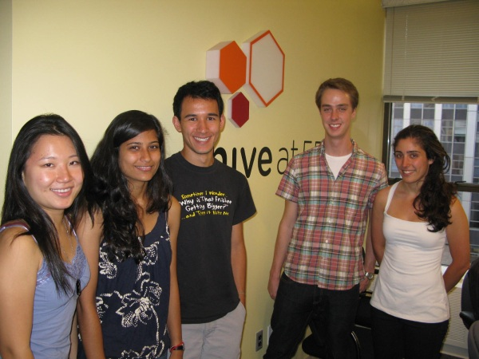
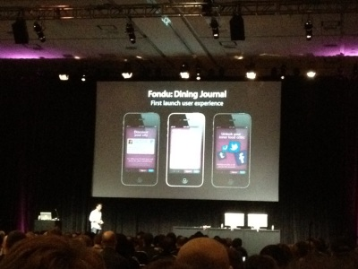
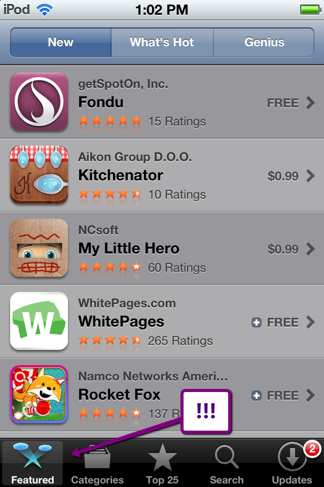
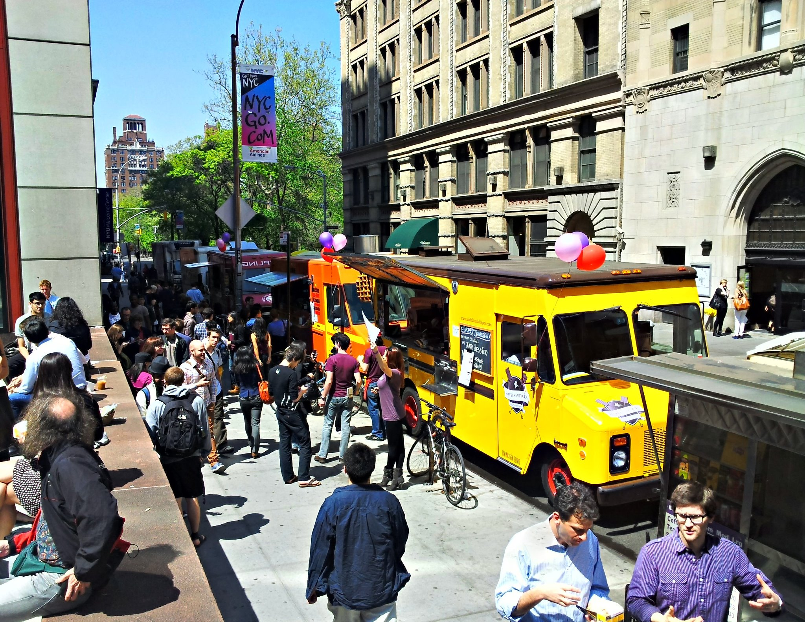

Co-founded in 2010. Our original team was serendipitously connected through an entrepreneurship class at NYU.
Co-founded in 2010. Our original team was serendipitously connected through an entrepreneurship class at NYU.
We were originally called enjoyn.me and we were focused on magically telling you where to go, based on where you'd been.
The Hive@55 nominated us for their Tech in Residence for the summer of 2010.
Re-branded from the enjoyn.me map to the SpotOn petals.
 Launched SpotOn onstage at TechCrunch Disrupt NYC 2011.
Launched SpotOn onstage at TechCrunch Disrupt NYC 2011.
By the fall, we had evolved the product to Fondu—a social network for bite-sized restaurant reviews. We closed our seed round of funding and launched the new iPhone app on November 22, 2011.
 sold to Airbnb in the fall of 2012.
sold to Airbnb in the fall of 2012.
recognized by apple as a case study for good User Interface design.
featured on the front page of the App Store and in "New and Noteworthy".
Hosted Food Trucks Made FREE! with Wafels & Dinges, Rickshaw, and Mexicue.
Did it up big with our public launch at SXSW.